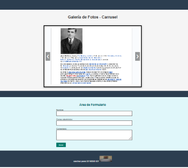
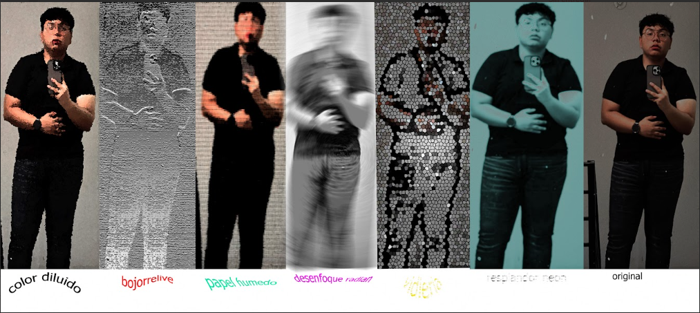

| Sub modulo 1 | Páginas WEB | Bimestre 1 Identifica los elementos del programa para elaborar páginas web, mediante la aplicación de los conceptos básicos del lenguaje de programación HTML y CSS, para la estructuración de una página web. Bimestre 2 Construye una página web, utilizando elementos del software de diseño web, favoreciendo su creatividad e innovación, para comunicar información en distintos contextos. |  |
| Sub modulo 2 | Diseño Digital | Bimestre 1 Diseña de forma creativa y responsable imágenes digitales, utilizando diferentes herramientas de aplicaciones de software, con la finalidad de ilustrar ideas publicitarias y de comunicación útiles en su contexto. Bimestre 2 Aplica el software de diseño editorial, distinguiendo sus elementos básicos para realizar estrategias creativas e innovadoras, en la transmisión de ideas favoreciendo su creatividad en un ambiente ético y responsable dentro de su contexto. |  |